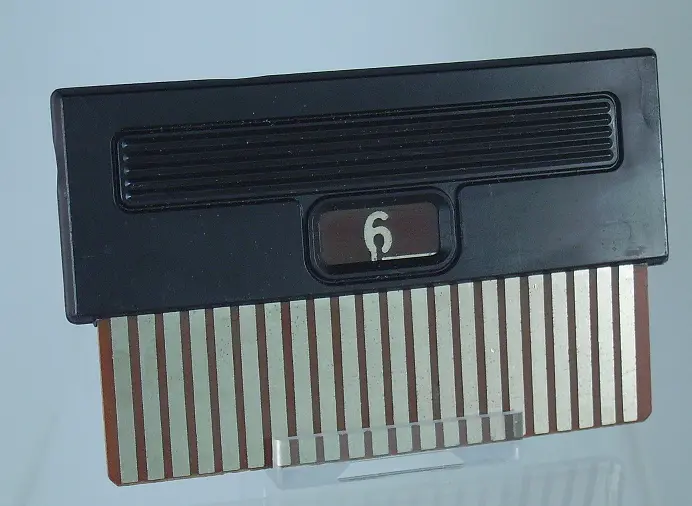
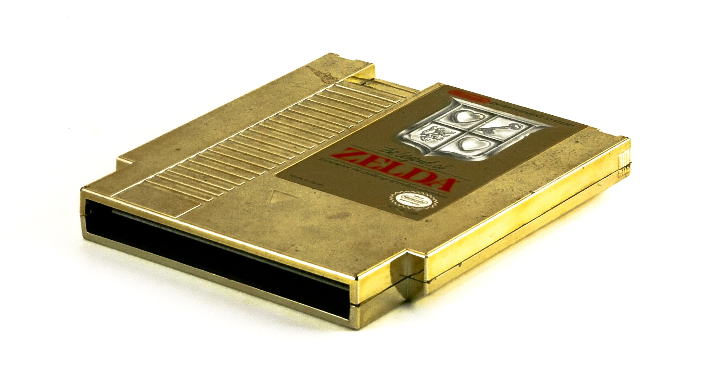
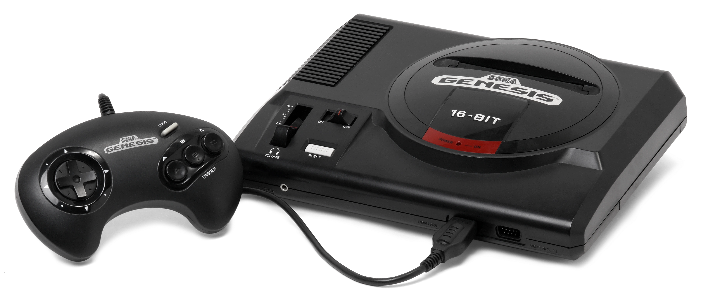
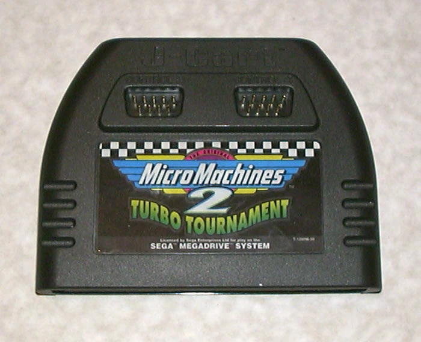
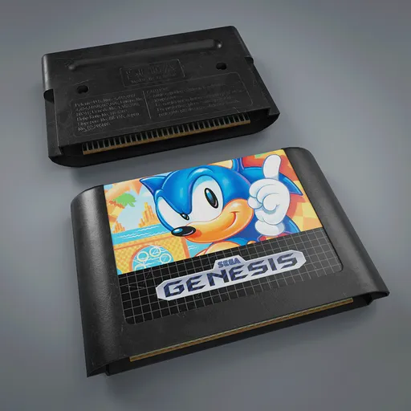

Retrokonsolien lyhyt historia
Sivustolla esitellään retropelikonsolien historiaa. Konsolit jaotellaan sukupolviin ja esiteltävänä on jokaisesta neljästä ensimmäisestä sukupolvesta yksi tai kaksi suosituinta konsolia. Sukupolvet menevät usein toistensa päälle kun vanhoille sukupolville tehdään vielä pelejä uusien konsolien markkinoille tulon jälkeen.
Ensimmäinen sukupolvi (1972-1980)
Magnavox Odyssey (1972)


Magnavox Odyssey oli ensimmäinen kaupallinen konsoli jonka pystyi liittämään televisioon. Se julkaistiin vuonna 1972 ja maksoi 100 dollaria joka vastaa nykyään noin 800 dollaria. Konsolissa ei ole sisällä prosessoria tai muistia vaan transistoreja ja diodeja joita aktivoidaan pelikaseteilla. Pelien mukana on kalvo joka laitetaan television päälle esittämään peligrafiikkaa. Konsoli itse kykenee piirtämään vain kolme neliötä ja viivan.
Toinen sukupolvi (1976-1992)
Atari 2600 (1977)


Atari 2600 on konsoli jossa on mikroprosessori ja muistia ja sen myötä pelit voitiin julkaista vaihdettaville ROM-kaseteille. Se julkaistiin vuonna 1977 ja maksoi 190 dollaria joka on nykyrahassa noin 1000 dollaria. Atari 2600 oli suosittu konsoli ja sitä myytiin yli 30 miljoonaa kappaletta. Konsoli alkoi menestyä Space Invaders pelin julkaisun jälkeen 1980.
Kolmas "8-bittinen" sukupolvi (1983-2003)
Nintendo Entertainment System (1983)




Nintendo julkaisi 8-bittisen konsolin aluksi Japanissa 1983 nimellä Famicom (Family computer) ja 1985 Yhdysvalloissa nimellä Nintendo Entertainment System (NES). NES maksoi 180 dollaria joka on nykyrahassa noin 550 dollaria. Konsoli oli suuri menestys ja sitä myytiin yli 60 miljoonaa kappaletta. NESiä edelsi 1983 videopelilama jonka seurauksena useat pelituottajat ajautuivat konkurssiin ja markkinat palautuivat NESin julkaisun jälkeen.
Neljäs "16-bittinen" sukupolvi (1987-2004)
Sega Genesis/Mega Drive (1988)




Sega julkaisi Mega Drive konsolin Japanissa 1988 ja saman konsolin Yhdysvalloissa nimellä Genesis 1989. Myös Euroopassa käytettiin Mega Drive nimeä. Segan konsoli maksoi 200 dollaria joka on nykyrahassa noin 500 dollaria. Edelliseen sukupolveen eroten Segan konsoli oli 16-bittinen joten se tarjosi paremmat grafiikat ja äänet kuin edellinen sukupolvi. Segan konsoli oli myös suosittu ja sitä myytiin yli 30 miljoonaa kappaletta.
Super Nintendo Entertainment System (1990)
NESin seuraaja Super Nintendo Entertainment System eli SNES julkaistiin Japanissa 1990 ja Yhdysvalloissa 1991. SNES maksoi 200 dollaria joka on nykyrahassa noin 500 dollaria. SNES oli edeltäjäänsä tehokkaampi 16-bittinen konsoli. SNES oli myös suosittu konsoli ja sitä myytiin lähes 50 miljoonaa kappaletta. Nintendo ja Sega olivat kovia kilpailemaan keskenään ja molemmat konsolit olivat suosittuja. Niiden välistä kilpailua on nimitetty "konsolisodaksi".